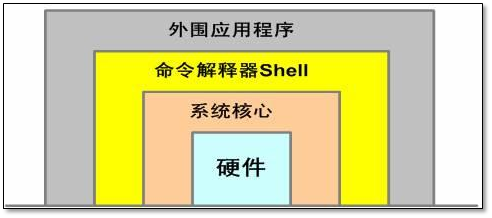
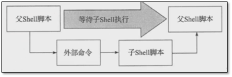

Shell编程基础–Shell入门
前言
为什么学习Shell
- Shell脚本语言是实现Linux/UNIX系统管理及自动化运维所必备的重要工具， Linux/UNIX系统的底层及基础应用软件的核心大都涉及Shell脚本的内容。
Shell Script，Shell脚本与Windows/Dos下的批处理相似，也就是用各类命令预先放入到一个文件中，方便一次性执行的一个程序文件，主要是方便管理员进行设置或者管理用的。但是它比Windows下的批处理更强大，比用其他编程程序编辑的程序效率更高，它使用了Linux/Unix下的命令。- 每一个合格 的Linux系统管理员或运维工程师，都需要能够熟练地编写Shell脚本语言，并能够阅 读系统及各类软件附带的Shell脚本内容。只有这样才能提升运维人员的工作效率，适 应曰益复杂的工作环境，减少不必要的重复工作，从而为个人的职场发展奠定较好的基础
什么是Shell
- Shell是一个命令解释器，它在操作系统的最外层，负责直接与用户对话，把用户的输入解释给操作系统，并处理各种各样的操作系统的输出结果，输出屏幕返回给用户。
- 交互的方式：从键盘输入命令，通过/bin/bash的解析，可以立即得到Shell的回应
- 非交互的方式: 脚本
- 
什么是Shell脚本
命令、变量和流程控制语句等有机的结合起来
shell脚本擅长处理纯文本类型的数据，而linux中，几乎所有的配置文件，日志，都是纯文本类型文件
脚本语言的种类
编译型
- 定义：指用专用的编译器，针对特定的操作平台（操作系统）将某种高级语言源代码一次性翻译成可被硬件平台直接的二进制机器码（具有操作数，指令、以及相应的格式），这个过程叫编译（./configure ,make ,make install）;编译好的可执行文件（.exe）.可在相对应的平台上运行（移植性查，但运行效率高）
- 典型的编译语言有：C语言 、C++ C#，Go 等
- 编译：高级语言– >编译器–> 目标代码
解释型
定义：指用专门解释器对源程序逐行解释成特定平台的机器码并立即执行的语言；相当于把编译型语言的编译链接过程混到一起同时完成的。
解释型语言执行效率较低，且不能脱离解释器运行，但它的跨平台型比较容易，只需提供特定解释器即可。
解释：高级语言–> 解释器–> 机器代码
shell，perl , python , JAVA
JavaScript , ruby ,PHP
脚本语言
- 定义：为了缩短传统的编写-编译-链接-运行（edit-compile-link-run）过程而创建的计算机编程语言。
- 特点：程序代码即是最终的执行文件，只是这个过程需要解释器的参与，所以说脚本语言与解释型语言有很大的联系。脚本语言通常是被解释执行的，而且程序是文本文件。
- 典型的脚本语言有，JavaScript，Python，shell等。
其他常用的脚本语言种类
- PHP
- 是网页程序，也是脚本语言。是一款更专注于web页面开发（前端展示）的脚本语言，例如：Dedecms,discuz。PHP程序也可以处理系统日志，配置文件等，php也可以调用系统命令。
- Perl脚本语言
- 比shell脚本强大很多，语法灵活、复杂，实现方式很多，不易读，团队协作困难，但仍不失为很好的脚本语言，存世大量的程序软件。MHA高可用Perl写的
- Python
- 不但可以做脚本程序开发，也可以实现web程序以及软件的开发。近两年越来越多的公司都会要求会Python。
- PHP
Shell脚本与php/perl/python语言的区别和优势？
- shell脚本的优势在于处理操作系统底层的业务 （linux系统内部的应用都是shell脚本完成）因为有大量的linux系统命令为它做支撑。2000多个命令都是shell脚本编程的有力支撑，特别是grep、awk、sed等。例如：一键软件安装、优化、监控报警脚本，常规的业务应用，shell开发更简单快速，符合运维的简单、易用、高效原则.
- PHP、Python优势在于开发运维工具以及web界面的管理工具，web业务的开发等。处理一键软件安装、优化，报警脚本。常规业务的应用等php/python也是能够做到的。但是开发效率和复杂比用shell就差很多了。
系统中的Shell
查看系统中的shell
1
2
3
4
5
6
7
8[root@RouterB ~]# cat /etc/shells
/bin/sh
/bin/bash
/sbin/nologin
/usr/bin/sh
/usr/bin/bash
/usr/sbin/nologin
[root@RouterB ~]#常用操作系统的默认Shell
1.Linux是Bourne Again shell（bash）
2.Solaris和FreeBSD缺省的是Bourne shell（sh）
3.AIX下是Korn Shell（ksh）
4.HP-UX缺省的是POSIX shell（sh）
查看当前系统默认的shell
1
2
3[root@RouterB ~]# echo $SHELL
/bin/bash
[root@RouterB ~]#
查看bash版本
1
2
3
4
5
6
7
8[root@RouterB ~]# bash -version
GNU bash， 版本 4.2.46(2)-release (x86_64-redhat-linux-gnu)
Copyright (C) 2011 Free Software Foundation, Inc.
许可证 GPLv3+: GNU GPL 许可证版本3或者更高 <http://gnu.org/licenses/gpl.html>
这是自由软件，您可以自由地更改和重新发布。
在法律允许的范围内没有担保.
[root@RouterB ~]#
sh与bash的关系
1
2
3[root@RouterB ~]# ll /bin/sh
lrwxrwxrwx. 1 root root 4 10月 10 03:36 /bin/sh -> bash
[root@RouterB ~]#
/bin与/user/bin的关系
1
2
3[root@RouterB ~]# ll /bin -d
lrwxrwxrwx. 1 root root 7 10月 10 03:36 /bin -> usr/bin
[root@RouterB ~]#
Shell脚本书写规范
脚本统一存放的目录
1
2[root@RouterB ~]# mkdir -p /server/scripts/
[root@RouterB ~]# cd /server/scripts/
选择解释器
注意格式 ↓
其中开头的”#!”字符又称为幻数，在执行bash脚本的时候，内核会根据”#!”后的解释器来确定该用那个程序解释这个脚本中的内容。
1
2
3
4
5
6
7
8
9
10
11
12
13
14[root@RouterB scripts]# head -1 /etc/init.d/*
==> /etc/init.d/functions <==
# -*-Shell-script-*-
==> /etc/init.d/netconsole <==
#!/bin/bash
==> /etc/init.d/network <==
#! /bin/bash
==> /etc/init.d/README <==
You are looking for the traditional init scripts in /etc/rc.d/init.d,
[root@RouterB scripts]#编辑脚本使用vim
- 可以使用 .vimrc 文件，能够快速的生成开头的注释信息
- 在Shell脚本中，跟在#后面的内容表示注释。注释部分不会被执行，仅给人看。注释可以自成一行，也可以跟在命令后面，与命令同行。要养成写注释的习惯，方便自己与他人。
- 最好不用中文注释，因为在不同字符集的系统会出现乱码。(字符集为zh_CN.UTF-8,为中文)。
文件名规范
- 名字要有意义，并且结尾以.sh结束
开发的规范和习惯
1) 放在统一的目录
2) 脚本以.sh为扩展名
3) 开头指定脚本解释器。
4) 开头加版本版权等信息，可配置~/.vimrc文件自动添加。
5) 脚本不要用中文注释，尽量用英文注释。
6) 代码书写优秀习惯
a、成对的内容一次性写出来，防止遗漏，如[ ]、’ ‘、” “等
b、[ ]两端要有空格，先输入[ ],退格，输入2个空格，再退格写。
c、流程控制语句一次书写完，再添加内容。(if 条件 ; then 内容;fi)ddd
d、通过缩进让代码易读。
f、脚本中的引号都是英文状态下的引号，其他字符也是英文状态。
Shell脚本的执行
执行脚本的办法
工作目录执行
工作目录执行，指的是执行脚本时，先进入到脚本所在的目录（此时，称为工作目录），然后使用 ./脚本方式执行
1
2
3
4
5
6
7
8
9[root@PC1 scripts]# ./hello.sh
-bash: ./hello.sh: 权限不够
[root@PC1 scripts]# chmod 764 hello.sh
[root@PC1 scripts]# ll
total 4
-rwxrw-r--. 1 root root 307 Oct 16 14:21 hello.sh
[root@PC1 scripts]# ./hello.sh
hello world
[root@PC1 scripts]#./的意思是说在当前的工作目录下执行hello.sh。如果不加上./，bash可能会响应找到不到hello.sh的错误信息
绝对路径执行
绝对路径中执行，指的是直接从根目录/到脚本目录的绝对路径
1
2
3
4
5[root@PC1 scripts]# pwd
/shells/scripts
[root@PC1 scripts]# /shells/scripts/hello.sh
hello world
[root@PC1 scripts]#
sh/bash执行
sh执行，指的是用脚本对应的sh或bash来接着脚本执行
1
2
3
4
5[root@PC1 scripts]# sh hello.sh
hello world
[root@PC1 scripts]# bash hello.sh
hello world
[root@PC1 scripts]#注意，若是以方法三的方式来执行，那么，可以不必事先设定shell的执行权限，甚至都不用写shell文件中的第一行（指定bash路径）。因为方法三 是将hello.sh作为参数传给sh(bash)命令来执行的。这时不是hello.sh自己来执行，而是被人家调用执行，所以不要执行权限。
shell环境执行
shell环境执行，指的是在当前的shell环境中执行，可以使用 . 接脚本 或 source 接脚本
1
2
3
4
5[root@PC1 scripts]# . hello.sh
hello world
[root@PC1 scripts]# source hello.sh
hello world
[root@PC1 scripts]#
区别
区别：
绝对路径和相对路径没有什么区别，两种方式都需要提前赋予脚本以执行权限。
sh或者bash方式是把脚本当做bash的调用来处理，所以，脚本不需要有执行权限就可以执行。
前三种方式都是在当前shell中打开一个子shell来执行脚本内容，当脚本内容结束，则子shell关闭，回到父shell中。
source或者.方式是使脚本内容在当前shell里执行，而不是单独开子shell执行。
开子shell与不开子shell的区别就在于，环境变量的继承关系，如在子shell中设置的当前变量，不做特殊通道处理的话，父shell是不可见的。而在当前shell中执行的话，则所有设置的环境变量都是直接生效可用的。

sh 于 source的区别
面试题
问sh test.sh后echo $user返回的结果_空 ?
1
2
3[root@oldboy scripts]# cat test.sh
#!/bin/bash
user=`whoami`
Shell的变量
特殊变量
定义变量的方式
变量的子串
变量的数值计算